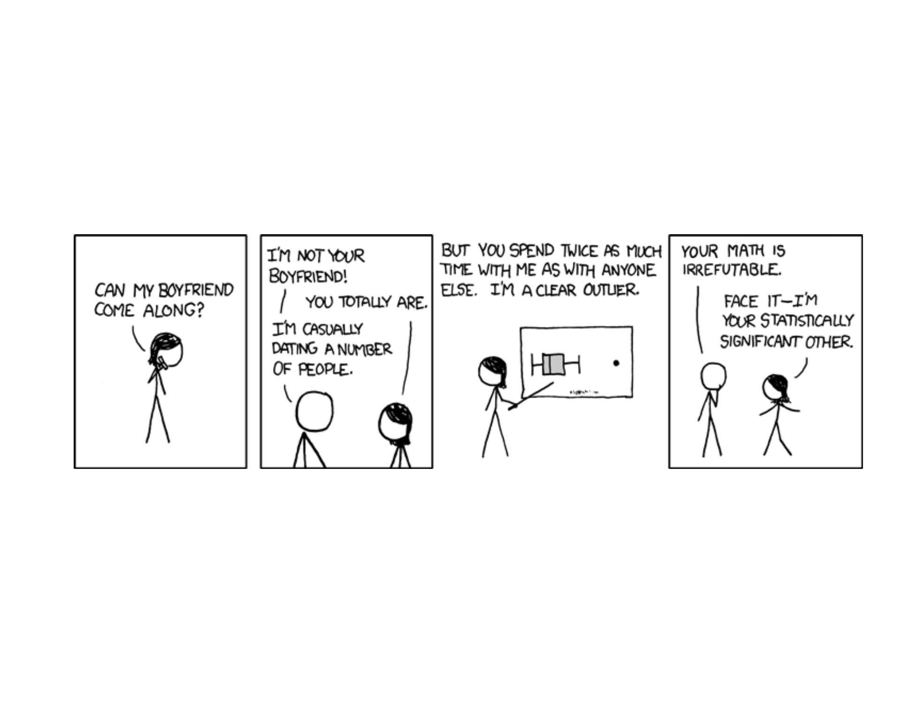
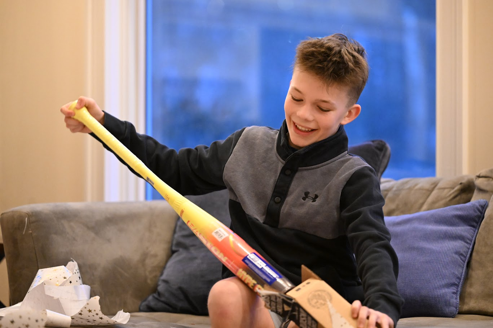
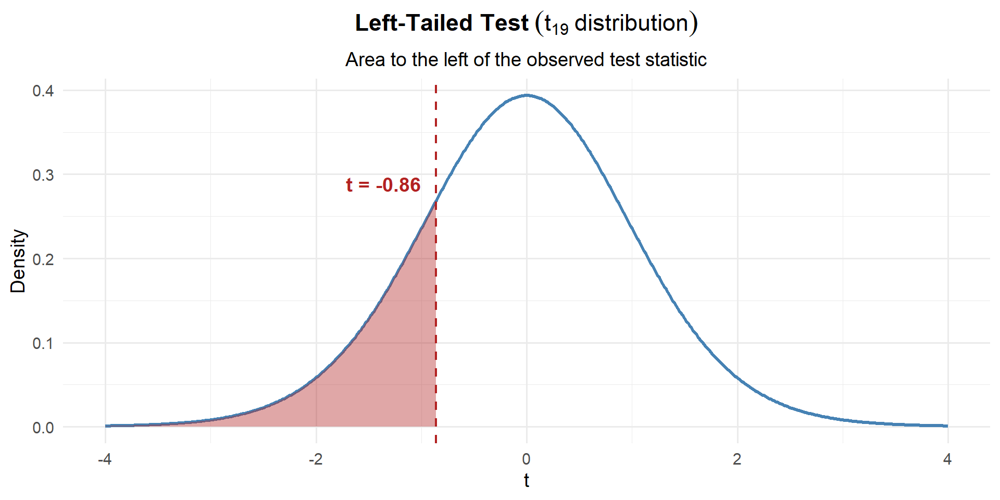
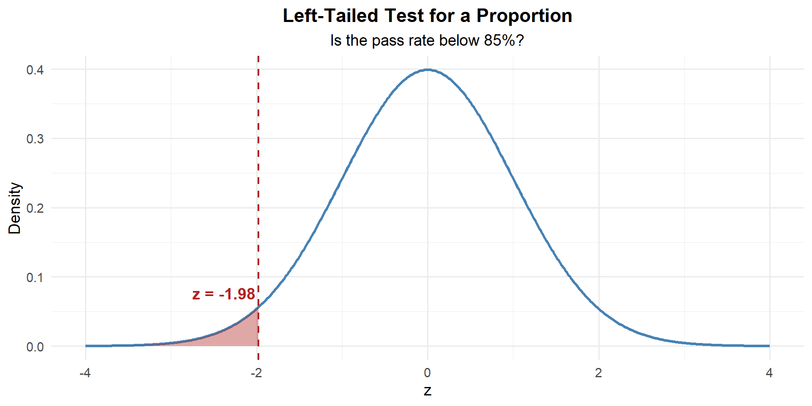
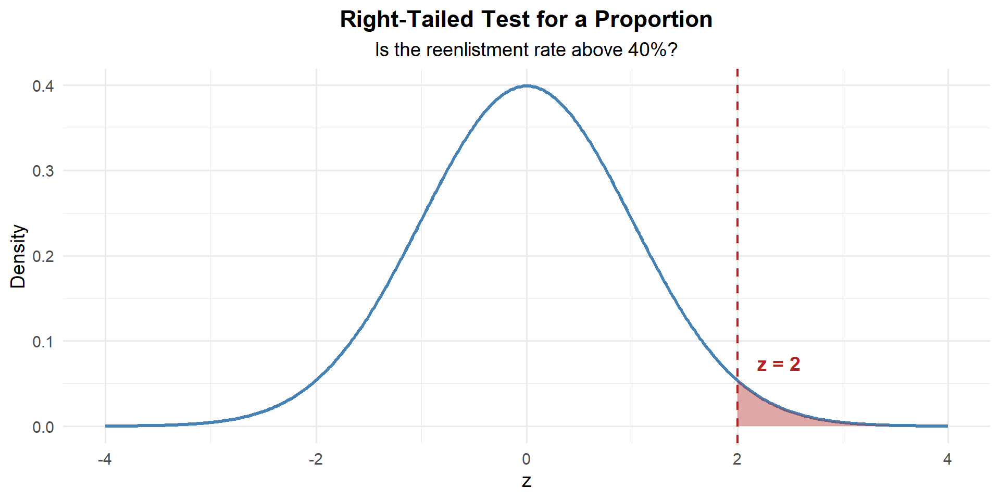
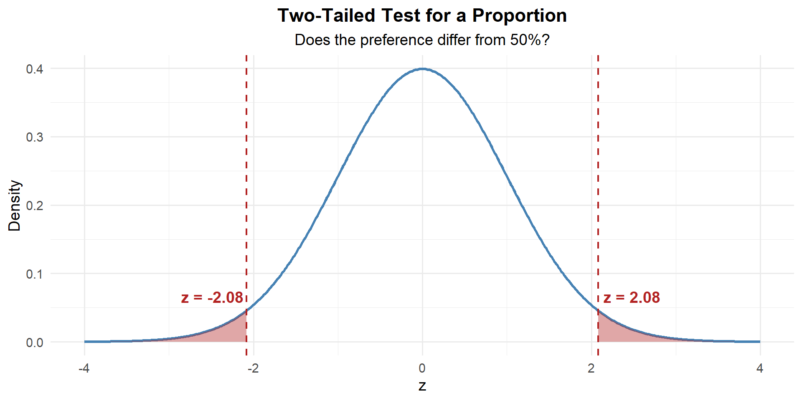

Lesson 21: One Sample t-Test
For a Practical Exercise Later in Class
Pull up your daily average screen time right now. Own it — don’t be embarrassed. Write it on the back board.
Android
- Open Settings
- Tap Digital Wellbeing & Parental Controls
- Your daily average is right at the top
iPhone
- Open Settings
- Tap Screen Time
- Your daily average is at the top

What We Did: Lessons 17–20
NoteLesson 17: Central Limit Theorem
The Central Limit Theorem (CLT): If \(X_1, X_2, \ldots, X_n\) are iid with mean \(\mu\) and standard deviation \(\sigma\), then for large \(n\):
\[\bar{X} \sim N\left(\mu, \frac{\sigma^2}{n}\right)\]
Standard Error of the Mean: \(\sigma_{\bar{X}} = \frac{\sigma}{\sqrt{n}}\)
Rule of thumb: \(n \geq 30\) unless the population is already normal.
NoteLesson 18: Confidence Intervals I
Confidence Interval for a Mean:
| Formula | When to Use | |
|---|---|---|
| Large sample (\(n \geq 30\)) | \(\bar{X} \pm z_{\alpha/2} \cdot \dfrac{\sigma}{\sqrt{n}}\) | Random sample, independence, \(s \approx \sigma\) |
| Small sample (\(n < 30\)) | \(\bar{X} \pm t_{\alpha/2, n-1} \cdot \dfrac{s}{\sqrt{n}}\) | Random sample, independence, population ~ Normal |
Key ideas: Higher confidence → wider interval. Larger \(n\) → narrower interval.
NoteLesson 19: Confidence Intervals II
Confidence Interval for a Proportion:
\[\hat{p} \pm z_{\alpha/2} \cdot \sqrt{\frac{\hat{p}(1-\hat{p})}{n}}\]
Conditions: \(n\hat{p} \geq 10\) and \(n(1-\hat{p}) \geq 10\)
Interpretation: “We are C% confident that [interval] captures the true [parameter in context].” The confidence level describes the method’s long-run success rate, not the probability any single interval is correct.
NoteLesson 20: Intro to Hypothesis Testing
Every hypothesis test follows four steps:
- State hypotheses: \(H_0\) (null — status quo) vs. \(H_a\) (alternative — what we want to show)
- Compute a test statistic: How far is our sample result from what \(H_0\) predicts?
- Find the \(p\)-value: If \(H_0\) were true, how likely is a result this extreme or more?
- Make a decision: If \(p \leq \alpha\), reject \(H_0\). If \(p > \alpha\), fail to reject \(H_0\).
Test statistic for a mean:
\[z = \frac{\bar{x} - \mu_0}{\sigma / \sqrt{n}} \qquad \text{or} \qquad t = \frac{\bar{x} - \mu_0}{s / \sqrt{n}}\]
What We’re Doing: Lesson 21
Objectives
- Review the one-sample \(t\)-test with a warm-up problem
- Carry out and interpret hypothesis tests for a population proportion
- Identify the conditions for each type of test
Required Reading
Devore, Sections 8.3, 8.4
Break!
Reese
Cal

We’re Ahead of Schedule!
Last class we covered two lessons’ worth of material in one sitting. Let’s keep the momentum going — today we’ll do a quick warm-up with a hypothesis test for a mean, then push ahead into hypothesis tests for proportions.
The Takeaway for Today
ImportantToday’s Key Ideas
Hypothesis test for a mean (review):
\[t = \frac{\bar{x} - \mu_0}{s / \sqrt{n}}, \qquad df = n - 1\]
Hypothesis test for a proportion (new!):
\[z = \frac{\hat{p} - p_0}{\sqrt{\frac{p_0(1 - p_0)}{n}}}\]
Notice: For proportions, the standard error uses \(p_0\) (the claimed value), not \(\hat{p}\). Why? Because we’re computing the SE under the assumption that \(H_0\) is true.
Warm-Up
A company commander claims his Soldiers run the 2-mile faster than 16 minutes on average. He randomly selects \(n = 20\) Soldiers and records their times:
run_times <- c(15.6, 16.1, 15.5, 14.9, 17.0, 16.7, 14.9, 15.8, 16.1, 16.0,
16.4, 16.3, 16.0, 16.1, 16.1, 15.1, 15.8, 16.1, 15.4, 16.0)Step 1: State the Hypotheses
The commander suspects the average is less than 16 minutes.
\[H_0: \mu = 16 \qquad \text{vs.} \qquad H_a: \mu < 16\]
Step 2: Compute the Test Statistic
Since \(\sigma\) is unknown, we use \(s\) in its place and the \(t\)-statistic with \(n - 1 = 19\) degrees of freedom:
\[t = \frac{\bar{x} - \mu_0}{s / \sqrt{n}} = \frac{15.90 - 16}{0.545 / \sqrt{20}} = \frac{-0.105}{0.122} = -0.86\]
xbar <- mean(run_times); s <- sd(run_times); n <- 20; mu0 <- 16
t_stat <- (xbar - mu0) / (s / sqrt(n))
t_stat[1] -0.8611446Our sample mean is 0.86 standard errors below what \(H_0\) claims.
Step 3: Find the \(p\)-Value
This is left-tailed, so we want \(P(t_{19} \leq t)\):

p_value <- pt(t_stat, df = n - 1)
p_value[1] 0.1999479\[p\text{-value} = P(t_{19} \leq -0.86) = 0.1999\]
Step 4: Decide and Conclude
At \(\alpha = 0.10\):
\[p\text{-value} = 0.1999 > 0.10 = \alpha\]
We fail to reject \(H_0\). At the 10% significance level, there is not sufficient evidence that the average 2-mile run time is less than 16 minutes. The commander’s claim is not supported by the data.
WarningFailing to Reject Is Not Failure
“Fail to reject” doesn’t mean the true average is 16 minutes. It means we don’t have strong enough evidence to conclude it’s less. Maybe the difference is real but our sample was too small to detect it, or maybe there truly is no difference. We simply can’t tell from this data.
A New Type of Scenario
The Army standard is that at least 85% of Soldiers pass the ACFT. A battalion commander suspects his unit’s pass rate is below 85%. In a random sample of \(n = 200\) Soldiers, 160 passed.
This looks different — instead of a sample mean \(\bar{x}\), we have a sample proportion \(\hat{p} = 160/200 = 0.80\). But can we still use the same four steps?
Let’s try.
Example 1: ACFT Pass Rate
Check conditions: \(np_0 = 200(0.85) = 170 \geq 10\) and \(n(1-p_0) = 200(0.15) = 30 \geq 10\). Good to go.
Step 1: State the Hypotheses
The commander suspects the pass rate is below 85%:
\[H_0: p = 0.85 \qquad \text{vs.} \qquad H_a: p < 0.85\]
Step 2: Compute the Test Statistic
What’s different here? Instead of \(\bar{x}\), we have \(\hat{p}\). But the CLT still applies! Under \(H_0\):
\[\hat{p} \sim N\left(p_0, \; \sqrt{\frac{p_0(1 - p_0)}{n}}\right)\]
Same idea as before — we standardize by subtracting the mean and dividing by the SE:
\[z = \frac{\hat{p} - p_0}{\sqrt{\dfrac{p_0(1 - p_0)}{n}}}\]
Now plug in our values:
\[z = \frac{\hat{p} - p_0}{\sqrt{\dfrac{p_0(1 - p_0)}{n}}} = \frac{0.80 - 0.85}{\sqrt{\dfrac{0.85(0.15)}{200}}} = \frac{-0.05}{0.0252} = -1.98\]
n <- 200; x <- 160
p_hat <- x / n; p0 <- 0.85
se <- sqrt(p0 * (1 - p0) / n)
z <- (p_hat - p0) / se
z[1] -1.980295Our sample proportion is 1.98 standard errors below what \(H_0\) claims.
ImportantKey Difference from the CI
In the confidence interval for a proportion, we used \(\hat{p}\) in the standard error:
\[SE_{CI} = \sqrt{\frac{\hat{p}(1-\hat{p})}{n}}\]
In the hypothesis test, we use \(p_0\):
\[SE_{test} = \sqrt{\frac{p_0(1-p_0)}{n}}\]
Why? Because the \(p\)-value asks: “If \(p = p_0\) were true, how likely is our data?” So we compute the SE assuming \(H_0\) is true.
Step 3: Find the \(p\)-Value
This is left-tailed, so we want \(P(Z \leq z)\):

p_value <- pnorm(z)
p_value[1] 0.02383519
\[p\text{-value} = P(Z \leq -1.98) = 0.0238\]
Step 4: Decide and Conclude
At \(\alpha = 0.05\):
\[p\text{-value} = 0.0238 \leq 0.05 = \alpha\]
We reject \(H_0\). At the 5% significance level, there is sufficient evidence that the unit’s ACFT pass rate is below 85%.
Example 2: Reenlistment Rate
A brigade commander believes that more than 40% of eligible Soldiers in her brigade will reenlist this year. In a random sample of \(n = 150\) eligible Soldiers, 72 said they intend to reenlist.
Check conditions: \(np_0 = 150(0.40) = 60 \geq 10\) and \(n(1-p_0) = 150(0.60) = 90 \geq 10\). Good to go.
Step 1: State the Hypotheses
The commander believes the reenlistment rate is above 40%:
\[H_0: p = 0.40 \qquad \text{vs.} \qquad H_a: p > 0.40\]
Step 2: Compute the Test Statistic
\[z = \frac{\hat{p} - p_0}{\sqrt{\dfrac{p_0(1 - p_0)}{n}}} = \frac{0.48 - 0.40}{\sqrt{\dfrac{0.40(0.60)}{150}}} = \frac{0.08}{0.040} = 2.00\]
n <- 150; x <- 72
p_hat <- x / n; p0 <- 0.40
se <- sqrt(p0 * (1 - p0) / n)
z <- (p_hat - p0) / se
z[1] 2Our sample proportion is 2.00 standard errors above what \(H_0\) claims.
Step 3: Find the \(p\)-Value
This is right-tailed, so we want \(P(Z \geq z)\):

p_value <- 1 - pnorm(z)
p_value[1] 0.02275013
\[p\text{-value} = P(Z \geq 2.00) = 1 - P(Z < 2.00) = 0.0228\]
Step 4: Decide and Conclude
At \(\alpha = 0.05\):
\[p\text{-value} = 0.0228 \leq 0.05 = \alpha\]
We reject \(H_0\). At the 5% significance level, there is sufficient evidence that more than 40% of eligible Soldiers intend to reenlist.
Example 3: MRE Preference
The manufacturer claims that exactly 50% of Soldiers prefer the new MRE menu over the old one. A food scientist suspects the true preference differs from 50%. In a survey of \(n = 300\) randomly selected Soldiers, 168 preferred the new menu.
Check conditions: \(np_0 = 300(0.50) = 150 \geq 10\) and \(n(1-p_0) = 300(0.50) = 150 \geq 10\). Good to go.
Step 1: State the Hypotheses
The scientist suspects the preference differs from 50%:
\[H_0: p = 0.50 \qquad \text{vs.} \qquad H_a: p \neq 0.50\]
Step 2: Compute the Test Statistic
\[z = \frac{\hat{p} - p_0}{\sqrt{\dfrac{p_0(1 - p_0)}{n}}} = \frac{0.56 - 0.50}{\sqrt{\dfrac{0.50(0.50)}{300}}} = \frac{0.06}{0.0289} = 2.08\]
n <- 300; x <- 168
p_hat <- x / n; p0 <- 0.50
se <- sqrt(p0 * (1 - p0) / n)
z <- (p_hat - p0) / se
z[1] 2.078461Our sample proportion is 2.08 standard errors above what \(H_0\) claims.
Step 3: Find the \(p\)-Value
This is two-tailed — evidence against \(H_0\) could come from either direction. So we need the area in both tails:

p_value <- 2 * (1 - pnorm(abs(z)))
p_value[1] 0.03766692
\[p\text{-value} = 2 \times P(Z \geq |2.078|) = 0.0377\]
Step 4: Decide and Conclude
At \(\alpha = 0.05\):
\[p\text{-value} = 0.0377 \leq 0.05 = \alpha\]
We reject \(H_0\). At the 5% significance level, there is sufficient evidence that the proportion of Soldiers who prefer the new MRE menu differs from 50%.
Conditions: When Can We Use These Tests?
We’ve now seen hypothesis tests for means and proportions. Each has conditions that must be met. Let’s put them side by side.
ImportantConditions for Hypothesis Tests
| \(z\)-Test for a Mean (for \(\mu\), \(\sigma\) known) | One-Sample \(t\)-Test (for \(\mu\), \(\sigma\) unknown) | One-Proportion \(z\)-Test (for \(p\)) | |
|---|---|---|---|
| Random | Random sample or randomized experiment | Random sample or randomized experiment | Random sample or randomized experiment |
| Independence | \(n < 10\%\) of the population | \(n < 10\%\) of the population | \(n < 10\%\) of the population |
| Distribution | \(n \geq 30\) (CLT) | Population ~ Normal, or \(n \geq 30\) | \(np_0 \geq 10\) and \(n(1 - p_0) \geq 10\) |
| Test Statistic | \(z = \dfrac{\bar{x} - \mu_0}{\sigma / \sqrt{n}}\) | \(t = \dfrac{\bar{x} - \mu_0}{s / \sqrt{n}}\) | \(z = \dfrac{\hat{p} - p_0}{\sqrt{p_0(1-p_0)/n}}\) |
| Distribution | \(N(0, 1)\) | \(t_{n-1}\) | \(N(0, 1)\) |
WarningThe Distribution Condition — Don’t Mix Them Up!
- For means: We need the population to be approximately normal (or \(n \geq 30\)). Check with a histogram/QQ plot.
- For proportions: We need enough successes and failures under \(H_0\): \(np_0 \geq 10\) and \(n(1-p_0) \geq 10\). This is purely a sample size check — no plotting needed.
Common mistake: Using \(n\hat{p} \geq 10\) for the hypothesis test. That’s the CI condition! For the test, use \(np_0\).
Why Are The Conditions Different?
NoteThe Logic Behind Each Condition
For means: The \(t\)-test relies on the sampling distribution of \(\bar{X}\) being approximately normal. If the population is normal, \(\bar{X}\) is exactly normal for any \(n\). If not, the CLT says \(\bar{X}\) is approximately normal for large \(n\) (\(n \geq 30\)).
For proportions: The test relies on the normal approximation to the binomial. This approximation works well when there are enough expected successes (\(np_0\)) and failures (\(n(1-p_0)\)) — at least 10 of each. We use \(p_0\) because we’re checking whether the normal approximation is valid under \(H_0\).
Both tests require random sampling and independence for the same reason: without them, the standard error formula doesn’t apply.
Summary: The Hypothesis Testing Toolkit So Far
| Left-tailed | Right-tailed | Two-tailed | |
|---|---|---|---|
| \(H_a\) for \(\mu\) | \(\mu < \mu_0\) | \(\mu > \mu_0\) | \(\mu \neq \mu_0\) |
| \(H_a\) for \(p\) | \(p < p_0\) | \(p > p_0\) | \(p \neq p_0\) |
| \(p\)-value (z) | pnorm(z) |
1 - pnorm(z) |
2*(1 - pnorm(abs(z))) |
| \(p\)-value (t) | pt(t, df=n-1) |
1 - pt(t, df=n-1) |
2*(1 - pt(abs(t), df=n-1)) |
Decision rule is always the same:
- \(p \leq \alpha\) → Reject \(H_0\)
- \(p > \alpha\) → Fail to reject \(H_0\)
Board Problems
Problem 1: PT Improvement
The baseline average ACFT score is 440 points. After implementing a new fitness program, a sample of \(n = 40\) cadets gives \(\bar{x} = 448\) with \(s = 32\). Does the program improve scores?
NoteQuestions
State the hypotheses.
Compute the test statistic and \(p\)-value.
At \(\alpha = 0.05\), state your conclusion in context.
TipAnswers
- The program claims improvement (scores above 440) — right-tailed:
\[H_0: \mu = 440 \qquad H_a: \mu > 440\]
xbar <- 448; mu0 <- 440; s <- 32; n <- 40
t_stat <- (xbar - mu0) / (s / sqrt(n))
t_stat[1] 1.581139p_value <- 1 - pt(t_stat, df = n - 1)
p_value[1] 0.06096175- \(p = 0.061 > 0.05\), so we fail to reject \(H_0\). At the 5% significance level, there is not sufficient evidence that the new fitness program increases average ACFT scores above 440 points.
Problem 2: Graduation Rate
A military academy claims that 95% of cadets who start their senior year will graduate. In a random sample of \(n = 250\) seniors from recent classes, 230 graduated. Is there evidence the true graduation rate is below the claim?
NoteQuestions
State the hypotheses.
Check the conditions.
Compute the test statistic and \(p\)-value.
At \(\alpha = 0.05\), state your conclusion in context.
TipAnswers
- The analyst suspects the rate is below 95% — left-tailed:
\[H_0: p = 0.95 \qquad H_a: p < 0.95\]
Random sample (stated). \(n = 250 < 10\%\) of all seniors. \(np_0 = 250(0.95) = 237.5 \geq 10\) and \(n(1-p_0) = 250(0.05) = 12.5 \geq 10\). Conditions met.
n <- 250; x <- 230
p_hat <- x / n
p0 <- 0.95
se <- sqrt(p0 * (1 - p0) / n)
z <- (p_hat - p0) / se
z[1] -2.176429p_value <- pnorm(z)
p_value[1] 0.01476161- \(p = 0.0148 < 0.05\), so we reject \(H_0\). At the 5% significance level, there is sufficient evidence that the graduation rate is below 95%.
Problem 3: Equipment Readiness
A battalion standard requires that 80% of vehicles be fully mission-capable (FMC) at any given time. A random inspection of \(n = 120\) vehicles finds 89 are FMC. Is the battalion meeting the standard?
NoteQuestions
State the hypotheses.
Check the conditions.
Compute the test statistic and \(p\)-value.
At \(\alpha = 0.05\), state your conclusion in context.
TipAnswers
- The XO suspects the rate differs — two-tailed:
\[H_0: p = 0.80 \qquad H_a: p \neq 0.80\]
Random sample (stated). \(n = 120 < 10\%\) of all vehicles. \(np_0 = 120(0.80) = 96 \geq 10\) and \(n(1-p_0) = 120(0.20) = 24 \geq 10\). Conditions met.
n <- 120; x <- 89
p_hat <- x / n
p0 <- 0.80
se <- sqrt(p0 * (1 - p0) / n)
z <- (p_hat - p0) / se
z[1] -1.597524p_value <- 2 * (1 - pnorm(abs(z)))
p_value[1] 0.1101489\(p = 0.1101 > 0.05\), so we fail to reject \(H_0\). At the 5% significance level, there is not sufficient evidence that the FMC rate differs from 80%.
Problem 4: Condition Check Practice
For each scenario, determine whether the conditions for a hypothesis test are met. If not, explain which condition fails.
NoteQuestions
A researcher surveys 15 cadets about study hours (\(\sigma\) unknown). The data is heavily right-skewed with an outlier. She wants to test \(H_0: \mu = 3\).
A poll asks 500 randomly selected voters whether they support a policy. 490 say yes. We want to test \(H_0: p = 0.95\).
A company commander selects every 3rd Soldier on the duty roster (\(n = 25\)) to test whether the average ruck weight exceeds 35 lbs. The data appears roughly normal.
A survey of \(n = 40\) randomly selected cadets finds 8 have failed a class. We want to test \(H_0: p = 0.25\).
TipAnswers
Conditions NOT met. With \(n = 15\) and heavy skew plus an outlier, the normality condition fails. Need more data or a nonparametric test.
Conditions met. \(np_0 = 500(0.95) = 475 \geq 10\) and \(n(1-p_0) = 500(0.05) = 25 \geq 10\). Random sample and independence are satisfied.
Conditions questionable. Selecting every 3rd Soldier is systematic sampling, not simple random sampling. If the roster has no periodic pattern, this may be acceptable — but it’s worth noting. Independence and normality are fine.
Conditions met. \(np_0 = 40(0.25) = 10 \geq 10\) and \(n(1-p_0) = 40(0.75) = 30 \geq 10\). Just barely meets the success/failure condition. Random sample and independence are satisfied.
Before You Leave
Today
- Warm-up: Reviewed hypothesis testing for a mean (and saw a “fail to reject” result)
- Proportions: Same four steps, but use \(z = \frac{\hat{p} - p_0}{\sqrt{p_0(1-p_0)/n}}\)
- Conditions for proportions: \(np_0 \geq 10\) and \(n(1-p_0) \geq 10\) (use \(p_0\), not \(\hat{p}\)!)
- Both tests require random sample and independence
Any questions?
Next Lesson
Lesson 22: Type I and Type II Errors
- Define Type I and Type II errors
- Understand the relationship between \(\alpha\), \(\beta\), and power
- Calculate the power of a test
Upcoming Graded Events
- WebAssign 8.3, 8.4 - Due before Lesson 22
- WPR II - Lesson 27